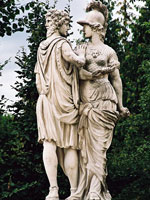

Янус, римське божество дверей; в цій іпостасі мав два обличчя, оскільки двері є і вхід, і вихід, вона веде і всередину будинку, і назовні. Крім того, був богом договорів і союзів. Янус наказував началами, його місце в просторі - вхідні двері і ворота, його місце в часі - початок року, початок подій.
До появи культу Юпітера Янус був божеством неба і сонячного світла, який відкривав небесні ворота і випускав сонце на небосхил, а на ніч замикати цю браму. Існувало також повір'я, що Янус царював на землі ще до Сатурна і навчив людей обчисленню часу, ремеслам і землеробства. З ним співвідносяться часи золотого століття, оскільки він вважався першим правителем Лациума, цивілізації, яка традиційно визначається як «Прометеева», оскільки її існування було ініційовано його дарами людству: вогнем, ремеслами і календарем.
Перший храм Янусa був споруджений за переказами царем Нумой Помпілія. Храм Януса являв собою дві великі арки, з'єднані поперечними стінами, з двома воротами, які перебували друг проти друга. Усередині стояла статуя бога, у якого було два обличчя, звернених у протилежні сторони; одне - в минуле, інше - в майбутнє. В руці у Януса був ключ, яким він відмикав і замикав небесну браму. Оскільки Янус був богом часу, який лічить дні, місяці і роки, то на його правій руці (на пальцях) було накреслено число 300 (латинські цифри = CCC), а на лівій - 65 (латинські цифри - LXV), що означало число днів в році. Римляни пов'язували Януса з долею, часом і війною; до Януса італійци зверталися при оголошенні війни.
В образі Януса присутні і космічні конотації. У Римі дволикий Янус, як втілення початку і кінця, ототожнюється з хаосом, з якого виник упорядкований світ; в ході цього процесу сам Янус з безформною брили-кулі перетворився в бога, що обертає, по Овідія, вісь світу. Можливо, спочатку він виступав як верховне божество; його ім'я згадували першим при зверненні до богів. Його епітет Гемин означає Подвійний; образ Януса може розглядатися як вираз єдності протилежностей і уособлення всеосяжність, влади над усіма сферами буття. Цей образ втілює уявлення про те, що технічний прогрес тягне за собою незворотні і часто негативні зміни в людському укладі; це символ необережного і непередбачливого використання природних сил і досягнень цивілізації.